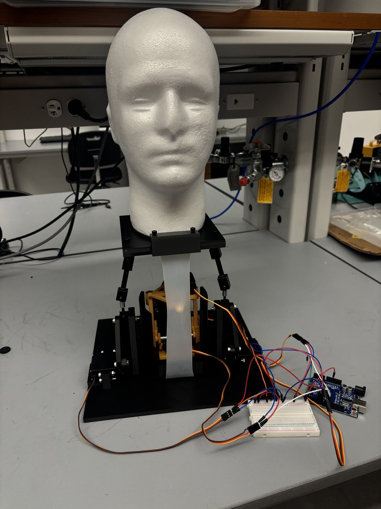
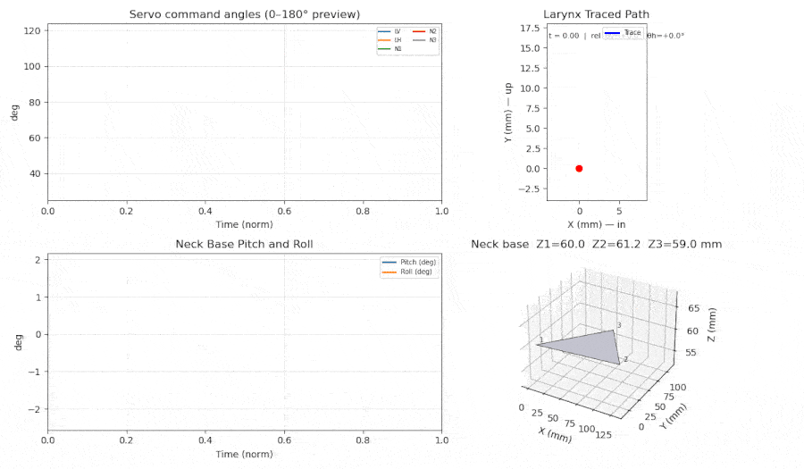

Masters student at UT Austin designing sensorized systems, competitive robots, and mechanisms that change the way we view the world.


| # | Category | Item |
|---|---|---|
| 01 | CAD / DESIGN | SolidWorks, Onshape, Fusion360 |
| 02 | Software | Python, Matlab, MicroPython, JavaScript, HTML, OpenCV |
| 03 | Electronics / DATA | I2C, ESP32, Arduino, barometric and piezoelectric sensing, BOTA 6-Axis Force/Torque |
| 04 | TESTING | Shimadzu Universal Testing Machine, material/mechanical characterization |
| 05 | MANUFACTURING | FDM Printing, Precision Machine Design, DLP 3D Printing - Carbon M1, SLA 3D printing - Elegoo Saturn 4 Ultra, Formlabs 3L |